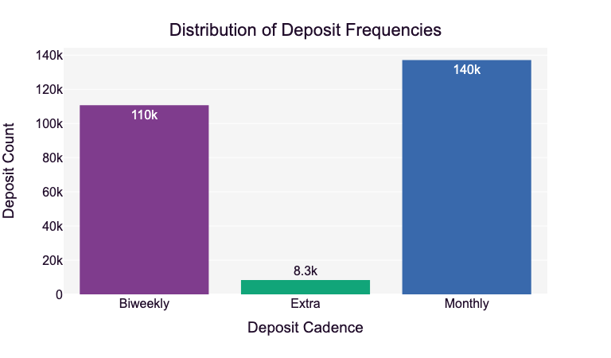

Marketing Campaign Analysis - Part 1
Background
About the Business
Company A is a debt negotiation business. Clients have substantial debt and are unable to make their minimum monthly payments on the debt accounts. To help manage their debts, Company A creates a dedicated bank account where clients deposit regular monthly payments. Those accounts are then used to negotiate with creditors on behalf of the client to settle the outstanding debt.
Company A's profits come from client-collected fees. When Company A successfully negotiates a settlement agreement these fees are charged to the client's account. The number of settlement agreements Company A can negotiate is proportional to the monthly deposited amount.
Analysis Purpose
Company A want to analyze the efficacy of a recent marketing campaign promoting the financial freedom clients can attain using their debt relief program. The campaign was aimed at both new and current clients with the intent of invigorating account deposits.
The goal of this analysis is to show marketing, sales and operations the success of the campaign. Specifically, the analysis includes:
- A quantitative assessment of whether the marketing campaign was successful.
- Recommended adjustments to the campaign strategy to improve performance.
Defining Success
Given our available data, these are the possible success factors that will be considered:
- Increase in number of deposits during the campaign month
- Increase in total amount of deposits during the campaign month
Data Overview
There are three datasets provided for the analysis; each is already cleaned and prepared:
client_data.csv: Fictional clients
| Column Name | Description |
|---|---|
| client_id | Unique client ID |
| client_geographical_region | Client geo-location (U.S. Census definitions) |
| client_residence_status | Client residence status |
| client_age | Client age |
deposit_data.csv: Client deposit behavior
| Column Name | Description |
|---|---|
| client_id | Unique client ID |
| deposit_type | Scheduled vs. Actual deposit |
| deposit_amount | Deposit amount |
| deposit_cadence | Frequency of deposit (scheduled) |
| deposit_date | Deposit date |
calendar_data.csv: Calendar reference table
| Column Name | Description |
|---|---|
| gregorian_date | Gregorian calendar date |
| month_name | Month relative to data set |
Notes:
- Month 1 and 2 are pre-campaign
- Month 3 is the campaign
- Month 4 and 5 are post-campaign
Assumptions:
- There is no seasonality in the results
- The campaign spend was distributed evenly across Month 3 (i.e., spend on the first day is the same as spend on the last day)
# import packages
import numpy as np
import pandas as pd
import datetime
import plotly.express as px
import matplotlib.pyplot as plt
Data Wrangling
For this first section, we're focusing on combining the relevant sample information into a single dataframe.
The first thing to note is that there are generally two rows for each deposit: a scheduled deposit then the actual deposit. Each of the two rows has the same client_id, date, deposit amount, and cadence.
As such, we're going to create dummy variables for the two deposit types then group the deposits together so there is only one sample per deposit. This will create the following options for each deposit:
| Actual | Scheduled | Description |
|---|---|---|
| True | True | A deposit is scheduled and completed |
| True | False | A deposit is scheduled but not completed |
| False | True | An unscheduled deposit is completed |
At the end of this section, each row will represent a single deposit. The final columns in the dataframe will be as follows:
| Column Name | Description | Value Type/Values |
|---|---|---|
| client_id | Unique client ID | Integer |
| deposit_amount | Amount of Deposit | Decimal |
| deposit_cadence | Frequency of Deposit | Categorical: Bi-Weekly, Extra, Monthly |
| deposit_date | Date of the deposit | datetime |
| actual_deposit | If the deposit was completed | Boolean: True/False |
| scheduled_deposit | If the deposit was scheduled | Boolean: True/False |
| month_name | Month relative to data set | Categorical: 1, 2, 3, 4, 5 |
| client_geographical_region | Client geo-location (U.S. Census definitions) | Categorical: Midwest, West, South, Northeast |
| client_residence_status | Client residence status | Categorical: Rent, Own |
| client_age | Client's age | Integer |
| age_group | Client's age in decades | Str: 30s, 40s, etc |
# read in data
df_clients = pd.read_csv('data/client_data.csv')
df_deposits = pd.read_csv('data/deposit_data.csv')
df_calendar = pd.read_csv('data/calendar_data.csv')
# return basic details on dataframes
var_init_df_names = [df_clients, df_deposits, df_calendar]
for i in var_init_df_names:
print(i.head())
print('Total rows: ',i.shape[0])
print('')
client_id ... client_age
0 538839486596724 ... 91
1 321708286091707 ... 83
2 848531901757235 ... 84
3 854405182328779 ... 83
4 769102176031316 ... 85
[5 rows x 4 columns]
Total rows: 46347
client_id deposit_type ... deposit_cadence deposit_date
0 446495122764671 Actual Deposit ... Monthly 2019-10-23
1 446495122764671 Actual Deposit ... Monthly 2019-09-23
2 446495122764671 Scheduled Deposit ... Monthly 2019-09-23
3 446495122764671 Scheduled Deposit ... Monthly 2019-10-23
4 446495122764671 Scheduled Deposit ... Monthly 2019-06-23
[5 rows x 5 columns]
Total rows: 480394
gregorian_date month_name
0 2019-06-01 Month 1
1 2019-06-02 Month 1
2 2019-06-03 Month 1
3 2019-06-04 Month 1
4 2019-06-05 Month 1
Total rows: 153
client_id ... client_age
0 538839486596724 ... 91
1 321708286091707 ... 83
2 848531901757235 ... 84
3 854405182328779 ... 83
4 769102176031316 ... 85
[5 rows x 4 columns]
Total rows: 46347
client_id deposit_type ... deposit_cadence deposit_date
0 446495122764671 Actual Deposit ... Monthly 2019-10-23
1 446495122764671 Actual Deposit ... Monthly 2019-09-23
2 446495122764671 Scheduled Deposit ... Monthly 2019-09-23
3 446495122764671 Scheduled Deposit ... Monthly 2019-10-23
4 446495122764671 Scheduled Deposit ... Monthly 2019-06-23
[5 rows x 5 columns]
Total rows: 480394
gregorian_date month_name
0 2019-06-01 Month 1
1 2019-06-02 Month 1
2 2019-06-03 Month 1
3 2019-06-04 Month 1
4 2019-06-05 Month 1
Total rows: 153
# verify types of deposits
df_deposits.deposit_type.unique()
array(['Actual Deposit', 'Scheduled Deposit'], dtype=object)
# get dummies for deposit types
df = pd.get_dummies(data=df_deposits, prefix='', prefix_sep='', columns=['deposit_type'])
print(df.head())
print('Total rows: ',df.shape[0])
client_id deposit_amount ... Actual Deposit Scheduled Deposit
0 446495122764671 303.0 ... True False
1 446495122764671 303.0 ... True False
2 446495122764671 303.0 ... False True
3 446495122764671 303.0 ... False True
4 446495122764671 303.0 ... False True
[5 rows x 6 columns]
Total rows: 480394
client_id deposit_amount ... Actual Deposit Scheduled Deposit
0 446495122764671 303.0 ... True False
1 446495122764671 303.0 ... True False
2 446495122764671 303.0 ... False True
3 446495122764671 303.0 ... False True
4 446495122764671 303.0 ... False True
[5 rows x 6 columns]
Total rows: 480394
# group scheduled/actual deposits for matching
df = df.groupby(['client_id', 'deposit_amount', 'deposit_cadence', 'deposit_date'],
as_index=False).agg({'Actual Deposit': 'max', 'Scheduled Deposit': 'max'})
print(df.head())
print('Total Rows: ',df.shape[0])
client_id deposit_amount ... Actual Deposit Scheduled Deposit
0 146046305811 247.0 ... False True
1 146046305811 247.0 ... True True
2 146046305811 247.0 ... True True
3 146046305811 247.0 ... True True
4 146046305811 247.0 ... True True
[5 rows x 6 columns]
Total Rows: 256143
client_id deposit_amount ... Actual Deposit Scheduled Deposit
0 146046305811 247.0 ... False True
1 146046305811 247.0 ... True True
2 146046305811 247.0 ... True True
3 146046305811 247.0 ... True True
4 146046305811 247.0 ... True True
[5 rows x 6 columns]
Total Rows: 256143
# merge dataframes
df = pd.merge(df, df_calendar, left_on='deposit_date', right_on='gregorian_date',
how='inner', suffixes=('',''))
df = pd.merge(df, df_clients, on='client_id', how='inner', suffixes=('',''))
# clean columns
df['month_name'] = df['month_name'].str.extract(r'(\d+)').astype(int)
df = df.rename(columns={'month_name': 'month', 'Actual Deposit': 'actual_deposit',
'Scheduled Deposit': 'scheduled_deposit'})
df = df.drop(['gregorian_date'], axis=1)
df.head()
| client_id | deposit_amount | deposit_cadence | deposit_date | actual_deposit | scheduled_deposit | month | client_geographical_region | client_residence_status | client_age | |
|---|---|---|---|---|---|---|---|---|---|---|
| 0 | 146046305811 | 247.0 | Biweekly | 2019-06-05 | False | True | 1 | Midwest | Rent | 42 |
| 1 | 146046305811 | 247.0 | Biweekly | 2019-06-19 | True | True | 1 | Midwest | Rent | 42 |
| 2 | 146046305811 | 247.0 | Biweekly | 2019-07-03 | True | True | 2 | Midwest | Rent | 42 |
| 3 | 146046305811 | 247.0 | Biweekly | 2019-07-17 | True | True | 2 | Midwest | Rent | 42 |
| 4 | 146046305811 | 247.0 | Biweekly | 2019-07-31 | True | True | 2 | Midwest | Rent | 42 |
# establish function for grouping ages
def group_by_age(age):
if age <30:
return '20s'
elif age <40:
return '30s'
elif age <50:
return '40s'
elif age <60:
return '50s'
elif age <70:
return '60s'
elif age <80:
return '70s'
elif age <90:
return '80s'
else:
return '90s and above'
# apply function
df['age_group'] = df['client_age'].apply(group_by_age)
# update categorical columns
df = df.astype({'deposit_cadence':'category', 'month':'category',
'client_geographical_region':'category', 'client_residence_status':'category'})
# update datetime column
df['deposit_date'] = pd.to_datetime(df['deposit_date'])
# download final csv for Tableau
df.to_csv('data/merged_data.csv')
df.info()
<class 'pandas.core.frame.DataFrame'>
RangeIndex: 256143 entries, 0 to 256142
Data columns (total 11 columns):
# Column Non-Null Count Dtype
--- ------ -------------- -----
0 client_id 256143 non-null int64
1 deposit_amount 256143 non-null float64
2 deposit_cadence 256143 non-null category
3 deposit_date 256143 non-null datetime64[ns]
4 actual_deposit 256143 non-null bool
5 scheduled_deposit 256143 non-null bool
6 month 256143 non-null category
7 client_geographical_region 256143 non-null category
8 client_residence_status 256143 non-null category
9 client_age 256143 non-null int64
10 age_group 256143 non-null object
dtypes: bool(2), category(4), datetime64[ns](1), float64(1), int64(2), object(1)
memory usage: 11.2+ MB
<class 'pandas.core.frame.DataFrame'>
RangeIndex: 256143 entries, 0 to 256142
Data columns (total 11 columns):
# Column Non-Null Count Dtype
--- ------ -------------- -----
0 client_id 256143 non-null int64
1 deposit_amount 256143 non-null float64
2 deposit_cadence 256143 non-null category
3 deposit_date 256143 non-null datetime64[ns]
4 actual_deposit 256143 non-null bool
5 scheduled_deposit 256143 non-null bool
6 month 256143 non-null category
7 client_geographical_region 256143 non-null category
8 client_residence_status 256143 non-null category
9 client_age 256143 non-null int64
10 age_group 256143 non-null object
dtypes: bool(2), category(4), datetime64[ns](1), float64(1), int64(2), object(1)
memory usage: 11.2+ MB
Data Exploration
In this section we'll be reviewing the distributions for different columns to get an understanding of the provided data.
# overview of deposit amounts
df['deposit_amount'].describe()
count 256143.000000
mean 370.823427
std 401.602436
min 0.010000
25% 200.000000
50% 290.000000
75% 454.000000
max 30000.000000
Name: deposit_amount, dtype: float64
# remove outliers for histogram
df_sub1k_deposits = df[df['deposit_amount'] < 1000]
# histogram for deposit amounts < 1000
fig1 = px.histogram(df_sub1k_deposits, x='deposit_amount',
color_discrete_sequence=px.colors.qualitative.Bold,
text_auto='.2s', nbins=15)
fig1.update_layout(
title={
'text': 'Distribution of Deposits under 1k',
'x':0.5,
'xanchor': 'center',
'yanchor': 'top'},
xaxis_title='Deposit Amount',
yaxis_title='Deposit Count',
legend_title='Deposit Amount',
font=dict(
family='Arial',
size=16,
color='#210D2B'
),
showlegend=False,
plot_bgcolor='#F5F5F5'
)
fig1.show()

# overview of client age
df['client_age'].describe()
count 256143.000000
mean 52.125684
std 13.794174
min 21.000000
25% 41.000000
50% 52.000000
75% 62.000000
max 105.000000
Name: client_age, dtype: float64
# boxplot for client ages
fig2 = px.box(df, x='client_age',
color_discrete_sequence=px.colors.qualitative.Bold)
fig2.update_layout(
title={
'text': 'Distribution of Client Ages',
'x':0.5,
'xanchor': 'center',
'yanchor': 'top'},
xaxis_title='Ages',
font=dict(
family='Arial',
size=16,
color='#210D2B'
),
showlegend=False,
plot_bgcolor='#F5F5F5'
)
fig2.show()
# histogram for client age groups < 1000
fig3 = px.histogram(df.sort_values(by=['age_group']), x='age_group',
color='age_group',
color_discrete_map={
'20s': px.colors.qualitative.Bold[0],
'30s': px.colors.qualitative.Bold[1],
'40s': px.colors.qualitative.Bold[2],
'50s': px.colors.qualitative.Bold[3],
'60s': px.colors.qualitative.Bold[4],
'70s': px.colors.qualitative.Bold[5],
'80s': px.colors.qualitative.Bold[6],
'90s and above': px.colors.qualitative.Bold[7],},
text_auto='.2s')
fig3.update_layout(
title={
'text': 'Distribution Client Age Groups',
'x':0.5,
'xanchor': 'center',
'yanchor': 'top'},
xaxis_title='Age Groups',
yaxis_title='Client Count',
legend_title='Age Groups',
font=dict(
family='Arial',
size=16,
color='#210D2B'
),
showlegend=False,
plot_bgcolor='#F5F5F5'
)
fig3.show()
# bar graph of deposit cadences
fig4 = px.histogram(df.sort_values(by=['deposit_cadence']), x='deposit_cadence',
color='deposit_cadence',
color_discrete_map={
'Biweekly': px.colors.qualitative.Bold[0],
'Extra': px.colors.qualitative.Bold[1],
'Monthly': px.colors.qualitative.Bold[2]},
text_auto='.2s')
fig4.update_layout(
title={
'text': 'Distribution of Deposit Frequencies',
'x':0.5,
'xanchor': 'center',
'yanchor': 'top'},
xaxis_title='Deposit Cadence',
yaxis_title='Deposit Count',
legend_title='Deposit Cadence',
font=dict(
family='Arial',
size=16,
color='#210D2B'
),
showlegend=False,
plot_bgcolor='#F5F5F5'
)
fig4.show()

# bar graph of geo regions
fig5 = px.histogram(df.sort_values(by=['client_geographical_region']), x='client_geographical_region',
color='client_geographical_region',
color_discrete_map={
'Midwest': px.colors.qualitative.Bold[0],
'West': px.colors.qualitative.Bold[1],
'South': px.colors.qualitative.Bold[2],
'Northeast': px.colors.qualitative.Bold[3]},
text_auto='.2s')
fig5.update_layout(
title={
'text': 'Distribution of Client Geographical Regions',
'x':0.5,
'xanchor': 'center',
'yanchor': 'top'},
xaxis_title='Geographical Regions',
yaxis_title='Client Count',
legend_title='Geographical Regions',
font=dict(
family='Arial',
size=16,
color='#210D2B'
),
showlegend=False,
plot_bgcolor='#F5F5F5'
)
fig5.show()

# bar graph of residence types
fig6 = px.histogram(df.sort_values(by=['client_residence_status']), x='client_residence_status',
color='client_residence_status',
color_discrete_map={
'Own': px.colors.qualitative.Bold[0],
'Rent': px.colors.qualitative.Bold[1]},
text_auto='.2s')
fig6.update_layout(
title={
'text': 'Distribution of Client Residence Statuses',
'x':0.5,
'xanchor': 'center',
'yanchor': 'top'},
xaxis_title='Residence Status',
yaxis_title='Client Count',
legend_title='Residence Status',
font=dict(
family='Arial',
size=16,
color='#210D2B'
),
showlegend=False,
plot_bgcolor='#F5F5F5'
)
fig6.show()

Initial Analysis
The analyses are primarily temporal line graphs broken out by month. As such, in each line there is a single data point for each month and there is a shaded purple zone that indicates the time period of the campaign (the third month).
Aggregated Number of Deposits per Month
# get count of deposits each month
df_deposit_counts = df.groupby(['month'], as_index=False, observed=True).size()
df_deposit_counts
| month | size | |
|---|---|---|
| 0 | 1 | 42257 |
| 1 | 2 | 43503 |
| 2 | 3 | 58674 |
| 3 | 4 | 56397 |
| 4 | 5 | 55312 |
# line graph of deposit counts
fig7 = px.line(df_deposit_counts, x='month', y='size',
color_discrete_sequence=px.colors.qualitative.Bold)
fig7.update_layout(
title={
'text': 'Deposits from June 2019 to Oct 2019',
'x':0.5,
'xanchor': 'center',
'yanchor': 'top'},
xaxis_title='Month',
yaxis_title='Number of Deposits',
font=dict(
family='Arial',
size=16,
color='#210D2B'
),
xaxis=dict(
tickvals=[1,2,3,4,5],
ticktext=['Jun', 'Jul', 'Aug', 'Sep', 'Oct']
),
plot_bgcolor='#F5F5F5'
)
fig7.add_vrect(x0=2.5, x1=3.5, line_width=0, fillcolor="purple", opacity=0.2)
fig7.show()

# percent change in count, months 2-3, all deposits
var_mo2_counts = df_deposit_counts.loc[df_deposit_counts['month'] == 2, 'size'].values[0]
var_mo3_counts = df_deposit_counts.loc[df_deposit_counts['month'] == 3, 'size'].values[0]
var_pct_change_all_counts = round(var_mo2_counts/var_mo3_counts*100,2)
var_pct_change_all_counts
74.14
Total Amount of Deposits per Month
# get sum deposits per month
df_deposit_amt = df.groupby(['month'], as_index=False, observed=True).agg({'deposit_amount': 'sum'})
df_deposit_amt
| month | deposit_amount | |
|---|---|---|
| 0 | 1 | 16113037.42 |
| 1 | 2 | 16465435.33 |
| 2 | 3 | 21889292.74 |
| 3 | 4 | 20388307.58 |
| 4 | 5 | 20127752.00 |
# line graph of summed deposit amounts
fig8 = px.line(df_deposit_amt, x='month', y='deposit_amount',
color_discrete_sequence=px.colors.qualitative.Bold)
fig8.update_layout(
title={
'text': 'Summed Deposits from June 2019 to Oct 2019',
'x':0.5,
'xanchor': 'center',
'yanchor': 'top'},
xaxis_title='Month',
yaxis_title='Summed Deposits ($mil)',
font=dict(
family='Arial',
size=16,
color='#210D2B'
),
xaxis=dict(
tickvals=[1,2,3,4,5],
ticktext=['Jun', 'Jul', 'Aug', 'Sep', 'Oct']
),
plot_bgcolor='#F5F5F5'
)
fig8.add_vrect(x0=2.5, x1=3.5, line_width=0, fillcolor="purple", opacity=0.2)
fig8.show()

# percent change in amount, months 2-3, all deposits
var_mo2_amt = df_deposit_amt.loc[df_deposit_amt['month'] == 2, 'deposit_amount'].values[0]
var_mo3_amt = df_deposit_amt.loc[df_deposit_amt['month'] == 3, 'deposit_amount'].values[0]
var_pct_change_all_amts = round(var_mo2_amt/var_mo3_amt*100,2)
var_pct_change_all_amts
75.22
# sum deposits <1k per month
df_sub1k_deposit_amt = df_sub1k_deposits.groupby(['month'], as_index=False,
observed=True).agg({'deposit_amount': 'sum'})
df_sub1k_deposit_amt
| month | deposit_amount | |
|---|---|---|
| 0 | 1 | 13864331.54 |
| 1 | 2 | 14129522.15 |
| 2 | 3 | 18405323.07 |
| 3 | 4 | 17554143.58 |
| 4 | 5 | 17354664.81 |
# line graph of summed deposit amounts < 1k
fig9 = px.line(df_sub1k_deposit_amt, x='month', y='deposit_amount',
color_discrete_sequence=px.colors.qualitative.Bold)
fig9.update_layout(
title={
'text': 'Summed Deposits from June 2019 to Oct 2019<br><sup>Limited to Deposits under $1k</sup>',
'x':0.5,
'xanchor': 'center',
'yanchor': 'top'},
xaxis_title='Month',
yaxis_title='Summed Deposits ($mil)',
font=dict(
family='Arial',
size=16,
color='#210D2B'
),
xaxis=dict(
tickvals=[1,2,3,4,5],
ticktext=['Jun', 'Jul', 'Aug', 'Sep', 'Oct']
),
plot_bgcolor='#F5F5F5'
)
fig9.add_vrect(x0=2.5, x1=3.5, line_width=0, fillcolor="purple", opacity=0.2)
fig9.show()

# percent change in amount, months 2-3, all deposits
var_mo2_sub1k_amt = df_sub1k_deposit_amt.loc[df_sub1k_deposit_amt['month'] == 2,
'deposit_amount'].values[0]
var_mo3_sub1k_amt = df_sub1k_deposit_amt.loc[df_sub1k_deposit_amt['month'] == 3,
'deposit_amount'].values[0]
var_pct_change_sub1k_amts = round(var_mo2_sub1k_amt/var_mo3_sub1k_amt*100,2)
var_pct_change_sub1k_amts
76.77
Impact of Client Geographical Region
# monthly deposit count per geographical region
df_region_count = df.groupby(['month', 'client_geographical_region'],
as_index=False, observed=True).size()
# monthly deposit sum per geographical region
df_region_sum = df.groupby(['month', 'client_geographical_region'],
as_index=False, observed=True).agg({'deposit_amount': 'sum'})
print(df_region_count.head())
print('')
print(df_region_sum.head())
month client_geographical_region size
0 1 Midwest 7669
1 1 Northeast 6789
2 1 South 9822
3 1 West 17977
4 2 Midwest 7933
month client_geographical_region deposit_amount
0 1 Midwest 2985379.00
1 1 Northeast 2426698.10
2 1 South 3813617.93
3 1 West 6887342.39
4 2 Midwest 3015617.64
month client_geographical_region size
0 1 Midwest 7669
1 1 Northeast 6789
2 1 South 9822
3 1 West 17977
4 2 Midwest 7933
month client_geographical_region deposit_amount
0 1 Midwest 2985379.00
1 1 Northeast 2426698.10
2 1 South 3813617.93
3 1 West 6887342.39
4 2 Midwest 3015617.64
# line graph for deposit count by region
fig10 = px.line(df_region_count, x='month', y='size',
color_discrete_map={
'Midwest': px.colors.qualitative.Bold[0],
'West': px.colors.qualitative.Bold[1],
'South': px.colors.qualitative.Bold[2],
'Northeast': px.colors.qualitative.Bold[3]},
color='client_geographical_region',
line_dash='client_geographical_region')
fig10.update_layout(
title={
'text': 'Deposits from June 2019 to Oct 2019<br><sup>Divided by Geographic Region</sup>',
'x':0.4,
'xanchor': 'center',
'yanchor': 'top'},
xaxis_title='Month',
yaxis_title='Number of Deposits',
legend_title='Geographical Regions',
font=dict(
family='Arial',
size=16,
color='#210D2B'
),
xaxis=dict(
tickvals=[1,2,3,4,5],
ticktext=['Jun', 'Jul', 'Aug', 'Sep', 'Oct']
),
plot_bgcolor='#F5F5F5'
)
fig10.add_vrect(x0=2.5, x1=3.5, line_width=0, fillcolor="purple", opacity=0.2)
fig10.show()

# pivot df
df_region_count_pct = df_region_count.pivot(index='client_geographical_region',
columns='month', values='size').add_prefix('month_').reset_index().rename_axis(None, axis=1)
# calculate percent change
df_region_count_pct['pct_change'] = round((df_region_count_pct['month_3'] - \
df_region_count_pct['month_2']) / df_region_count_pct['month_2'] * 100,2)
# select relevent columns
df_region_count_pct = df_region_count_pct.iloc[:,[0,-1]] \
.sort_values(by='pct_change', ascending=False)
df_region_count_pct
| client_geographical_region | pct_change | |
|---|---|---|
| 1 | Northeast | 37.56 |
| 3 | West | 36.26 |
| 0 | Midwest | 33.87 |
| 2 | South | 31.23 |
# line graph for deposit sum by region
fig11 = px.line(df_region_sum, x='month', y='deposit_amount',
color_discrete_map={
'Midwest': px.colors.qualitative.Bold[0],
'West': px.colors.qualitative.Bold[1],
'South': px.colors.qualitative.Bold[2],
'Northeast': px.colors.qualitative.Bold[3]},
color='client_geographical_region',
line_dash='client_geographical_region')
fig11.update_layout(
title={
'text': 'Summed Deposits from June 2019 to Oct 2019<br><sup>Divided by Geographic Region</sup>',
'x':0.4,
'xanchor': 'center',
'yanchor': 'top'},
xaxis_title='Month',
yaxis_title='Summed Deposits ($mil)',
legend_title='Geographical Regions',
font=dict(
family='Arial',
size=16,
color='#210D2B'
),
xaxis=dict(
tickvals=[1,2,3,4,5],
ticktext=['Jun', 'Jul', 'Aug', 'Sep', 'Oct']
),
plot_bgcolor='#F5F5F5'
)
fig11.add_vrect(x0=2.5, x1=3.5, line_width=0, fillcolor="purple", opacity=0.2)
fig11.show()
# pivot df
df_region_sum_pct = df_region_sum.pivot(index='client_geographical_region',
columns='month', values='deposit_amount').add_prefix('month_').reset_index().rename_axis(None, axis=1)
# calculate percent change
df_region_sum_pct['pct_change'] = round((df_region_sum_pct['month_3'] - \
df_region_sum_pct['month_2']) / df_region_sum_pct['month_2'] * 100,2)
# select relevent columns
df_region_sum_pct = df_region_sum_pct.iloc[:,[0,-1]] \
.sort_values(by='pct_change', ascending=False)
df_region_sum_pct
| client_geographical_region | pct_change | |
|---|---|---|
| 1 | Northeast | 35.73 |
| 3 | West | 35.15 |
| 0 | Midwest | 30.31 |
| 2 | South | 29.09 |
Impact of Client Residence Status
# monthly deposit count per residence status
df_residence_count = df.groupby(['month', 'client_residence_status'],
as_index=False, observed=True).size()
# monthly deposit sum per residence status
df_residence_sum = df.groupby(['month', 'client_residence_status'],
as_index=False, observed=True).agg({'deposit_amount': 'sum'})
print(df_residence_count)
print('')
print(df_residence_sum)
month client_residence_status size
0 1 Own 30224
1 1 Rent 12033
2 2 Own 30953
3 2 Rent 12550
4 3 Own 42469
5 3 Rent 16205
6 4 Own 40517
7 4 Rent 15880
8 5 Own 39769
9 5 Rent 15543
month client_residence_status deposit_amount
0 1 Own 12292979.87
1 1 Rent 3820057.55
2 2 Own 12468493.20
3 2 Rent 3996942.13
4 3 Own 16789509.21
5 3 Rent 5099783.53
6 4 Own 15547196.13
7 4 Rent 4841111.45
8 5 Own 15372575.14
9 5 Rent 4755176.86
month client_residence_status size
0 1 Own 30224
1 1 Rent 12033
2 2 Own 30953
3 2 Rent 12550
4 3 Own 42469
5 3 Rent 16205
6 4 Own 40517
7 4 Rent 15880
8 5 Own 39769
9 5 Rent 15543
month client_residence_status deposit_amount
0 1 Own 12292979.87
1 1 Rent 3820057.55
2 2 Own 12468493.20
3 2 Rent 3996942.13
4 3 Own 16789509.21
5 3 Rent 5099783.53
6 4 Own 15547196.13
7 4 Rent 4841111.45
8 5 Own 15372575.14
9 5 Rent 4755176.86
# line graph for deposit count by residence type
fig12 = px.line(df_residence_count, x='month', y='size',
color_discrete_map={
'Own': px.colors.qualitative.Bold[0],
'Rent': px.colors.qualitative.Bold[1]},
color='client_residence_status',
line_dash='client_residence_status')
fig12.update_layout(
title={
'text': 'Deposits from June 2019 to Oct 2019<br><sup>Divided by Residence Status</sup>',
'x':0.4,
'xanchor': 'center',
'yanchor': 'top'},
xaxis_title='Month',
yaxis_title='Number of Deposits',
legend_title='Residence Statuses',
font=dict(
family='Arial',
size=16,
color='#210D2B'
),
xaxis=dict(
tickvals=[1,2,3,4,5],
ticktext=['Jun', 'Jul', 'Aug', 'Sep', 'Oct']
),
plot_bgcolor='#F5F5F5'
)
fig12.add_vrect(x0=2.5, x1=3.5, line_width=0, fillcolor="purple", opacity=0.2)
fig12.show()

# pivot df
df_residence_count_pct = df_residence_count.pivot(index='client_residence_status',
columns='month', values='size').add_prefix('month_').reset_index().rename_axis(None, axis=1)
# calculate percent change
df_residence_count_pct['pct_change'] = round((df_residence_count_pct['month_3'] - \
df_residence_count_pct['month_2']) / df_residence_count_pct['month_2'] * 100,2)
# select relevent columns
df_residence_count_pct = df_residence_count_pct.iloc[:,[0,-1]] \
.sort_values(by='pct_change', ascending=False)
df_residence_count_pct
| client_residence_status | pct_change | |
|---|---|---|
| 0 | Own | 37.20 |
| 1 | Rent | 29.12 |
# line graph for deposit sum by residence type
fig13 = px.line(df_residence_sum, x='month', y='deposit_amount',
color_discrete_map={
'Own': px.colors.qualitative.Bold[0],
'Rent': px.colors.qualitative.Bold[1]},
color='client_residence_status',
line_dash='client_residence_status')
fig13.update_layout(
title={
'text': 'Summed Deposits from June 2019 to Oct 2019<br><sup>Divided by Residence Status</sup>',
'x':0.4,
'xanchor': 'center',
'yanchor': 'top'},
xaxis_title='Month',
yaxis_title='Summed Deposits ($mil)',
legend_title='Residence Statuses',
font=dict(
family='Arial',
size=16,
color='#210D2B'
),
xaxis=dict(
tickvals=[1,2,3,4,5],
ticktext=['Jun', 'Jul', 'Aug', 'Sep', 'Oct']
),
plot_bgcolor='#F5F5F5'
)
fig13.add_vrect(x0=2.5, x1=3.5, line_width=0, fillcolor="purple", opacity=0.2)
fig13.show()

# pivot df
df_residence_sum_pct = df_residence_sum.pivot(index='client_residence_status',
columns='month', values='deposit_amount').add_prefix('month_').reset_index().rename_axis(None, axis=1)
# calculate percent change
df_residence_sum_pct['pct_change'] = round((df_residence_sum_pct['month_3'] - \
df_residence_sum_pct['month_2']) / df_residence_sum_pct['month_2'] * 100,2)
# select relevent columns
df_residence_sum_pct = df_residence_sum_pct.iloc[:,[0,-1]] \
.sort_values(by='pct_change', ascending=False)
df_residence_sum_pct
| client_residence_status | pct_change | |
|---|---|---|
| 0 | Own | 34.66 |
| 1 | Rent | 27.59 |
Impact of Client Age
# monthly deposit count per age group
df_age_count = df.groupby(['month', 'age_group'],
as_index=False, observed=True).size()
# monthly deposit sum per age group
df_age_sum = df.groupby(['month', 'age_group'],
as_index=False, observed=True).agg({'deposit_amount': 'sum'})
print(df_age_count.head())
print('')
print(df_age_sum.head())
month age_group size
0 1 20s 1180
1 1 30s 6826
2 1 40s 9852
3 1 50s 10914
4 1 60s 8216
month age_group deposit_amount
0 1 20s 294596.98
1 1 30s 2181426.60
2 1 40s 3562326.77
3 1 50s 4224857.92
4 1 60s 3391942.68
month age_group size
0 1 20s 1180
1 1 30s 6826
2 1 40s 9852
3 1 50s 10914
4 1 60s 8216
month age_group deposit_amount
0 1 20s 294596.98
1 1 30s 2181426.60
2 1 40s 3562326.77
3 1 50s 4224857.92
4 1 60s 3391942.68
# line graph for deposit count by age group
fig14 = px.line(df_age_count, x='month', y='size',
color_discrete_map={
'20s': px.colors.qualitative.Bold[0],
'30s': px.colors.qualitative.Bold[1],
'40s': px.colors.qualitative.Bold[2],
'50s': px.colors.qualitative.Bold[3],
'60s': px.colors.qualitative.Bold[4],
'70s': px.colors.qualitative.Bold[5],
'80s': px.colors.qualitative.Bold[6],
'90s and above': px.colors.qualitative.Bold[7],},
color='age_group',
line_dash='age_group')
fig14.update_layout(
title={
'text': 'Deposits from June 2019 to Oct 2019<br><sup>Divided by Age Group</sup>',
'x':0.4,
'xanchor': 'center',
'yanchor': 'top'},
xaxis_title='Month',
yaxis_title='Number of Deposits',
legend_title='Age Groups',
font=dict(
family='Arial',
size=16,
color='#210D2B'
),
xaxis=dict(
tickvals=[1,2,3,4,5],
ticktext=['Jun', 'Jul', 'Aug', 'Sep', 'Oct']
),
plot_bgcolor='#F5F5F5'
)
fig14.add_vrect(x0=2.5, x1=3.5, line_width=0, fillcolor="purple", opacity=0.2)
fig14.show()
# pivot df
df_age_count_pct = df_age_count.pivot(index='age_group',
columns='month', values='size').add_prefix('month_').reset_index().rename_axis(None, axis=1)
# calculate percent change
df_age_count_pct['pct_change'] = round((df_age_count_pct['month_3'] - \
df_age_count_pct['month_2']) / df_age_count_pct['month_2'] * 100,2)
# select relevent columns
df_age_count_pct = df_age_count_pct.iloc[:,[0,-1]] \
.sort_values(by='pct_change', ascending=False)
df_age_count_pct
| age_group | pct_change | |
|---|---|---|
| 0 | 20s | 78.35 |
| 1 | 30s | 43.19 |
| 2 | 40s | 36.40 |
| 3 | 50s | 32.47 |
| 5 | 70s | 28.65 |
| 4 | 60s | 27.68 |
| 6 | 80s | 21.28 |
| 7 | 90s and above | 17.12 |
# line graph for deposit sum by age group
fig15 = px.line(df_age_sum, x='month', y='deposit_amount',
color_discrete_map={
'20s': px.colors.qualitative.Bold[0],
'30s': px.colors.qualitative.Bold[1],
'40s': px.colors.qualitative.Bold[2],
'50s': px.colors.qualitative.Bold[3],
'60s': px.colors.qualitative.Bold[4],
'70s': px.colors.qualitative.Bold[5],
'80s': px.colors.qualitative.Bold[6],
'90s and above': px.colors.qualitative.Bold[7],},
color='age_group',
line_dash='age_group')
fig15.update_layout(
title={
'text': 'Summed Deposits from June 2019 to Oct 2019<br><sup>Divided by Age Group</sup>',
'x':0.4,
'xanchor': 'center',
'yanchor': 'top'},
xaxis_title='Month',
yaxis_title='Summed Deposits ($mil)',
legend_title='Age Groups',
font=dict(
family='Arial',
size=16,
color='#210D2B'
),
xaxis=dict(
tickvals=[1,2,3,4,5],
ticktext=['Jun', 'Jul', 'Aug', 'Sep', 'Oct']
),
plot_bgcolor='#F5F5F5'
)
fig15.add_vrect(x0=2.5, x1=3.5, line_width=0, fillcolor="purple", opacity=0.2)
fig15.show()

# pivot df
df_age_sum_pct = df_age_sum.pivot(index='age_group',
columns='month', values='deposit_amount').add_prefix('month_').reset_index().rename_axis(None, axis=1)
# calculate percent change
df_age_sum_pct['pct_change'] = round((df_age_sum_pct['month_3'] - \
df_age_sum_pct['month_2']) / df_age_sum_pct['month_2'] * 100,2)
# select relevent columns
df_age_sum_pct = df_age_sum_pct.iloc[:,[0,-1]] \
.sort_values(by='pct_change', ascending=False)
df_age_sum_pct
| age_group | pct_change | |
|---|---|---|
| 0 | 20s | 76.05 |
| 1 | 30s | 42.81 |
| 2 | 40s | 37.88 |
| 3 | 50s | 31.84 |
| 4 | 60s | 26.19 |
| 5 | 70s | 24.29 |
| 6 | 80s | 19.30 |
| 7 | 90s and above | -12.31 |
Results
The two success measures we focused on were:
- Increase in number of deposits during the campaign month
- Increase in total amount of deposits during the campaign month
In this section we'll consider how those goals measured up in the full client group as well as in client subsets.
Campaign Success on Full Client Set
In the full client set, there was a distinct increase in both the number of deposits and summed total of deposits between months two (pre-campaign) and three (campaign period).
The following graph, Deposits from June 2019 to October 2019, demonstrates a 74.4% increase in the total number of deposits between months two and three, with month three being our campaign month (highlighted in purple).
The increase in the number of deposits wasn't just clients making more deposits of smaller amount, though. The total dollar amount deposited increased by a similar percent between months two and three, as well.
The two following graphs, Summed Deposits from June 2019 to October 2019 and Summed Deposits from June 2019 to October 2019 (Limited to Deposits Under $1k), show 74.14% and 76.77% increases in the dollar amount of deposits between months two and three, respectively.
The fact that each of the three measures had an increase of approximately 75% during the month of the campaign versus the preceeding months is a strong indicator that the campaign was a relative success. Of course, we will want to take into consideration the fact that these values again dropped after the campaign, though not to pre-campaign numbers. This will be discussed in the recommended next steps.
Campaign Success on Client Subsets
This section reviews the campaign efficacy on the following client subsets:
- Client Geographical Regions (Northeast, Midwest, West, South)
- Client Residence Status (Rent, Own)
- Client Age Group (divided by decade)
As with the prior review, we'll consider efficacy in terms of an increase in the number of deposits and an increase in the total dollar amount of deposits between months two and three.
It is important to note, though, that intersectionality is not taken into account within these subsets. As such, it is possible for confounding to occur. This is discussed in recommended next steps.
Success Measured by Deposit Count
When reviewing the increase in deposit counts between months two and three, every sub-group in every category had an increase. However, not all increases are created equal. These are the spreads for each of the subsets:
- Client Geographical Region: 6.33% (Low: 31.23%; High: 37.56%)
- Client Residence Status: 8.08% (Low: 29.12%; High: 37.20% )
- Client Age Group: 61.23% (Low: 17.12%; High: 78.35%)
| Region | % Change in Count |
|---|---|
| Northeast | 37.56% |
| West | 36.26% |
| Midwest | 33.87% |
| South | 31.23% |
| Residence Status | % Change in Count |
|---|---|
| Own | 37.20% |
| Rent | 29.12% |
| Age Group | % Change in Count |
|---|---|
| 20s | 78.35% |
| 30s | 43.19% |
| 40s | 36.40% |
| 50s | 32.47% |
| 60s | 27.68% |
| 70s | 28.65% |
| 80s | 21.28% |
| 90s + | 17.12% |
From this, we can posit that individual regions and residence statuses did not play a huge role in the campaign success. However, client age had a direct impact on the overall success. Specifically, there's a strong trend that younger clients were more likely to act on the campaign than older clients.
Success Measured by Dollar Amount of Deposits
For increases in the dollar amount deposited between months two and three, though, there was not an increase in every sub-group. Rather, while clients in their 90's and above did increase the number of deposits, there was actually a decrease in the total dollar amount deposited. The rest of the subsets did show an increase, though, with the following ranges represented:
- Client Geographical Region: 6.64% (Low: 29.09%; High: 35.73%)
- Client Residence Status: 7.07% (Low: 27.59%; High: 34.66% )
- Client Age Group*: 56.75% (Low: 19.30%; High: 76.05%)
*Removing clients in their 90's and above, who showed a decrease in dollar amounts deposited
| Region | % Change in Amount |
|---|---|
| Northeast | 35.73% |
| West | 35.15% |
| Midwest | 30.31% |
| South | 29.09% |
| Residence Status | % Change in Amount |
|---|---|
| Own | 34.66% |
| Rent | 27.59% |
| Age Group | % Change in Amount |
|---|---|
| 20s | 76.05% |
| 30s | 42.81% |
| 40s | 37.88% |
| 50s | 31.84% |
| 60s | 26.19% |
| 70s | 24.29% |
| 80s | 19.30% |
| 90s + | -12.31% |
The trends shown in the number of deposits continued in the total dollar amount deposited per sub-group: geographical region and residence status had minimal imact on the campaign efficacy, while client ages had a clear impact on campaign success; younger age groups had better response to the campaign than older age groups.
Recommended Next Steps
While the campaign was generally successfull, there are three things mentioned in this analysis which require further review:
- Decreases in both deposit counts and dollar amounts deposited after the campaign
- The impact of intersectionality on campaign success
- Identifying priority clients to get the best ROI on campaign expenses
Post-Campaign Decreases
While the campaign showed initial success we would want to consider long-term effects on clients. An influx in payments over a single month is beneficial to both Company A and clients, but if the accounts quickly revert to historical payment schedules then the overall benefit of the campaign is reduced. As such, we would want to identify a plan to ensure ongoing success.
Impact of Intersectionality
In general, it seems as if client age groups played the bigged role in the overall success of the campaign. However, some deeper analysis to identify the combined subsets of customers on whom the campaign was most effective would benefit the final point of identifying priority clients.
Priority Clients
Finally, after deeper analysis to hone in on the combined client subsets who had the best camapgin reponse, we can refine the campaign to further focus on those client groups. This would help improve the overall efficacy of the campaign. Alogn with that, we could also get a better understanding of the worst-performing subsets to design a plan to invigorate those groups using their own specialized campaigns.